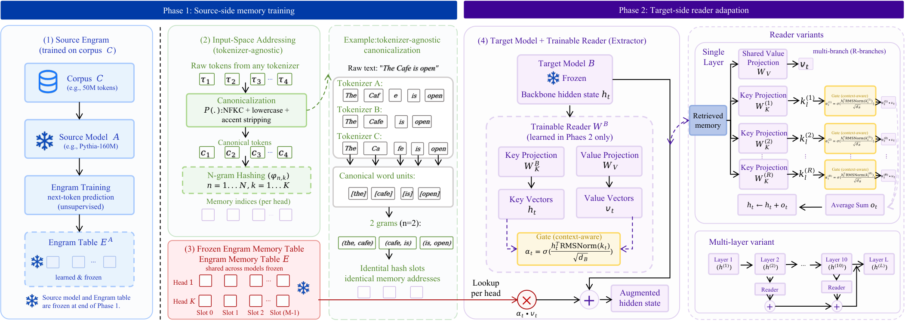

Abstract
Methods for improving knowledge use in large language models typically fall into two regimes. Non-parametric retrieval offers flexible access to external knowledge, but adds retrieval latency, context overhead, and only shallow integration with the backbone. Parametric adaptation is efficient at inference time, but entangles knowledge with model weights and can be hard to update, audit, or transfer. Engram-style hashed memory occupies a middle regime: it stores learned information in an external, addressable table, yet consumes that table through a small learned reader. This raises a basic question: when such a memory is moved across backbones, what matters more, the frozen memory itself or the target-side reader? We study this question through cross-model frozen-memory extraction, where a memory trained on a source model is frozen and attached to a different target model while only a lightweight reader is trained. Ablations show that learned memory content and correct addressing both matter, but the transferred table becomes useful only through a reader aligned to the target model. On downstream tasks, a target-side dual-layer 4-branch reader on question answering nearly closes the gap between same-model and cross-model transfer, reaching a 38.8 average score, a strong controlled result. These results suggest that Engram can serve as a reusable external knowledge artifact, provided that a target-specific reader is trained to align and integrate the retrieved representations.
Methods
We study the portability of external memory structures through the lens of cross-model frozen-memory extraction. Given an Engram-style hashed memory table trained with a source model A, we attach it to a different target model B to evaluate if the knowledge can be extracted outside its source backbone. Relative to the native Engram architecture, our framework introduces three key methodological components:
- Tokenizer-Agnostic Addressing: Replaces model-specific token-ID lookup with a shared canonicalization function based on word boundaries, keeping the memory address space entirely stable across different target tokenizers.
- Target-Side Reader: Employs a shared-value reader family (including multi-layer and multi-branch variants) to align and project the retrieved memory vectors into the target model's residual stream.
- Training Regime: Adapts the target model using a standard next-token language modeling loss where only the target-side reader parameters are updated; both the exported source memory table and the target backbone remain strictly frozen.

Research Questions
By separating memory storage from model-specific readers, we seek to evaluate the true reusability of the artifact:
- RQ1: Does frozen memory transfer across backbones, tokenizers, and scales? Evaluating if an exported memory table remains useful when attached to a completely different model with distinct tokenizer boundaries and size.
- RQ2: How much does reader design matter? Varying memory placement (layers) and retrieval capacity (branches) to optimize how the target backbone integrates memory representations.
- RQ3: When does transferred memory help downstream? Evaluating the practical limits of transfer, observing strong gains on factual QA and evidence-matching tasks but not on truthfulness-oriented calibration.
- RQ4: Does transferred memory improve answer-token support in question answering? Investigating whether memory transfer directly boosts log-probability support for gold-standard answers rather than relying solely on overall generation accuracy.
- RQ5: How data-efficient is frozen-memory transfer? Measuring whether frozen-memory transfer reduces the amount of target-side training required to reach competitive performance compared to learning memory from scratch.
- RQ6: What drives the gains from memory transfer? Determining whether improvements originate from structured knowledge transfer or simply parameter capacity through ablations of memory addressing and reader interfaces.
Key Findings
-
1. Portability Across Tokenizers and Architectures
Frozen memory transfer remains effective across backbone families, tokenizer boundaries, and target scales, with gains in all nine main source-target pairs; the same Qwen3.5 target family also retains selective downstream gains beyond perplexity, and successful transfer ultimately depends on whether the target reader can extract the stored structure. -
2. Reader Design is a First-Order Determinant
Reader design is a first-order determinant of transfer quality. Dual-layer injection recovers most of the available gain, while multi-branch gating provides an additional improvement by allowing the same retrieved value representation to be conditioned through multiple target-dependent key-gate pathways. Together, these design choices raise average QA accuracy from 34.2 to 38.5 without changing the transferred memory itself. -
3. Task-Dependent Downstream Enhancements
Memory transfer has a high practical ceiling: with a sufficiently expressive target-side reader, cross-model transfer nearly matches same-model reuse and saturates at approximately 38.5-38.8 average QA accuracy. This ceiling, however, is task-dependent rather than universal. Transferred memory provides the clearest gains on factual and evidence-oriented tasks, has little effect on broader reading comprehension, and can be mildly harmful on TruthfulQA. -
4. Improved Answer-Token Support
Transferred memory improves answer-token support selectively but positively: it increases gold-answer support on NQ, WebQA, TriviaQA, and HotpotQA relative to both random memory and no memory, while the near-zero answer-position ablation effects indicate that the gain comes more from useful factual support than from direct answer-token injection. -
5. Target-Data Efficiency
Frozen-memory transfer is target-data efficient: it reaches strong perplexity with substantially fewer target-side updates than learning a new memory from scratch, while downstream gains remain positive but task-dependent. -
6. Gains Cannot Be Explained by Parameters Alone
The downstream gains cannot be explained by parameter count alone: successful transfer depends on meaningful memory addressing and a sufficiently expressive reader interface, while its main advantage over scratch training is better target-side data efficiency rather than a higher asymptotic ceiling.
Resources
arXiv Preprint
Read the full paper on cross-model frozen-memory transfer and target-side reader adaptation.
GitHub Repository
Access the implementation, training configuration, and evaluation scripts for XMemTransfer.
Hugging Face Collection
Explore the released model artifacts and resources for cross-model memory transfer.
BibTeX
@article{li2026cross,
title = {Cross-Model Memory Transfer via Target-Side Reader Adaptation},
author = {Li, Mingyuan and Yu, Guangsheng and Wang, Xu and Ji, Shaoxiong},
journal = {arXiv preprint arXiv:2608.17050},
eprint = {2608.17050},
archivePrefix = {arXiv},
primaryClass = {cs.CL},
url = {https://arxiv.org/abs/2608.17050},
year = {2026}
}